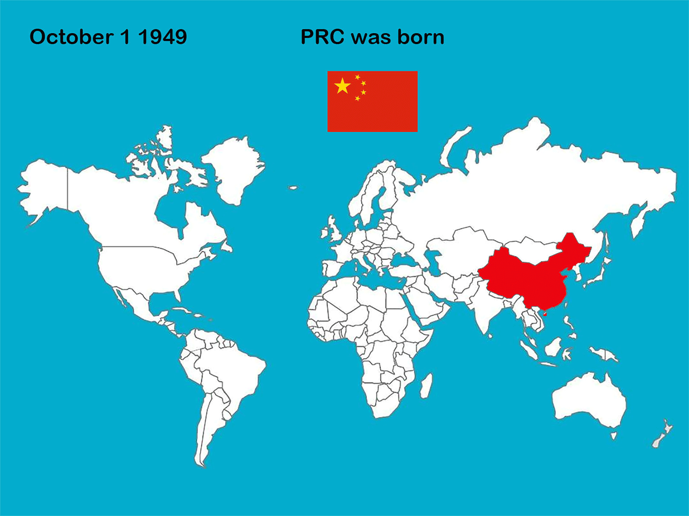

1.各阶段中国新增建交国家地域分布情况
2018年5月，位于加勒比海地区的多米尼加共和国和位于西非的布基纳法索先后出其不备地向台湾当局宣布要断绝所谓的“外交关系”，并在北京签署了与中华人民共和国建立外交关系的联合公报。这使我们不禁回忆起去年6月份，中美洲国家巴拿马也宣布了与台湾“断交”并和我国建立外交关系。如今台湾”的友邦“仅剩下18个，而台湾当局的“外交部”早已被台湾民众戏谑称为“断交部”，和他国的断交经验可名列全球第一。而自1949年新中国成立以来，我国政府在外交上以马克思列宁主义、毛泽东思想、邓小平理论作为分析国际形势、制定对外政策的指针，在尖锐复杂的国际斗争中取得了显著的外交成就。截止2018年6月，我国已与177个国家建立了外交关系。
下面的动态地图可以给大家直观地展示近70年来我国与世界各国的建交历程
1. 第一次建交高潮（1949-1955）

2. 第二次建交高潮（1956-1969）
3. 第三次建交高潮（1970-1979）

4. 改革开放后的新时代外交
改革开放以来，随着综合国力的增强和国际地位的提高，中国更加鲜明地奉行独立自主的外交政策，始终走和平发展道路，在巩固已有外交关系的基础上进一步建交剩下的其它的国家，并且重视保持与经历苏联、南斯拉夫解体的剧变国家的关系。21世纪以后中国又与十多个国家建交。
至今同中国建交的国家有177个。
5. 中国与他国断交事件
中国与印度尼西亚因印尼国内大规模的排华、屠华事件在1965年断交，于1990复交。
其他断交事件绝大多数使因台湾问题（利益问题）而断交。例如：“中华人民共和国与布基纳法索于1973年9月建交。1994年2月2日，布政府与台湾当局签署“复交”公报，2月4日，中国政府宣布中止与布的外交关系。2018年5月24日，布基纳法索宣布同台“断交”。5月26日，国务委员兼外交部长王毅在北京同布基纳法索外长巴里签署《中华人民共和国与布基纳法索关于恢复外交关系的联合公报》，即日两国正式恢复大使级外交关系。”利比里亚和中非共和国甚至曾两次分别与中国断交又复交。绝大多数出现断交的国家都是不发达的小国，毕竟国家的建交都是跟国家的利益牵扯起来的。小国都是与自己利益最大的那个国家建交，他们墙头草也是正常的。